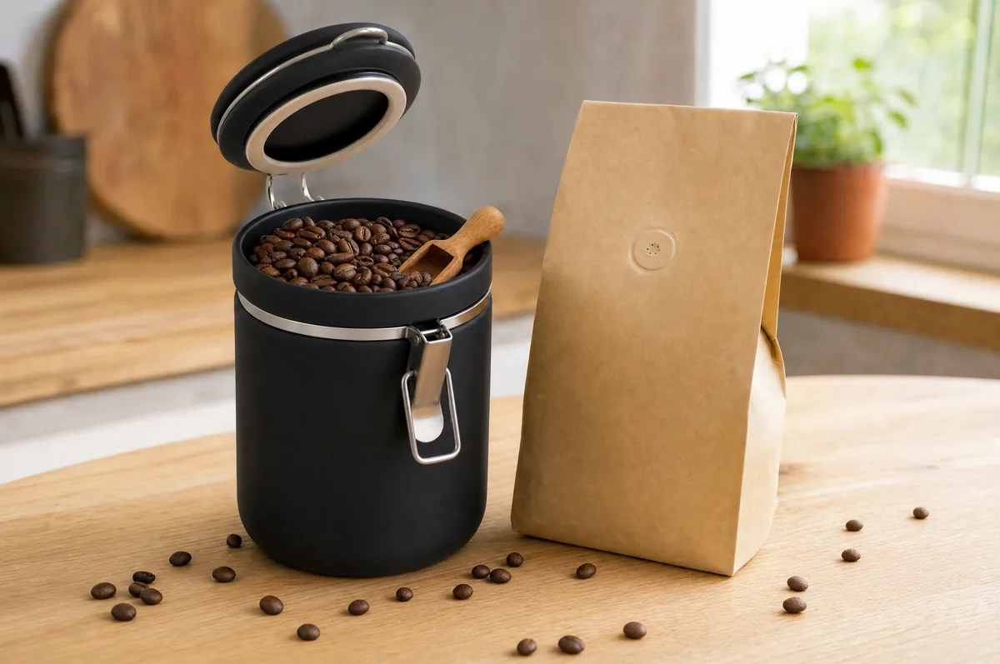
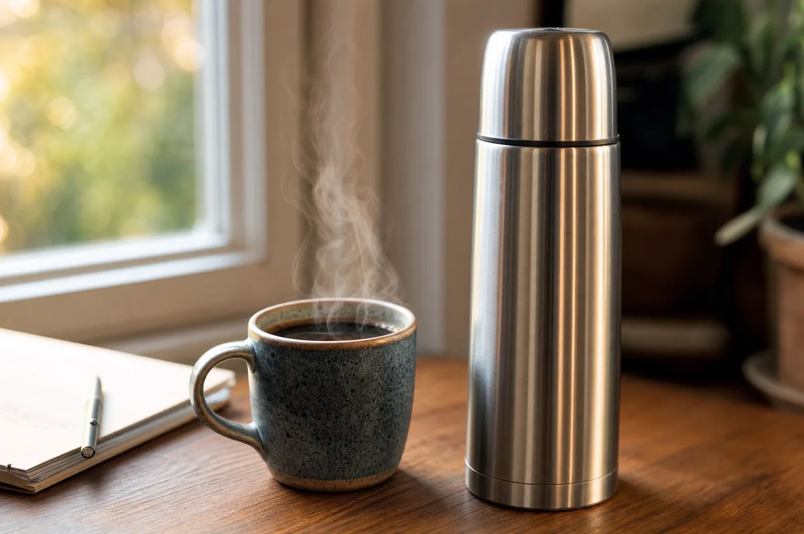
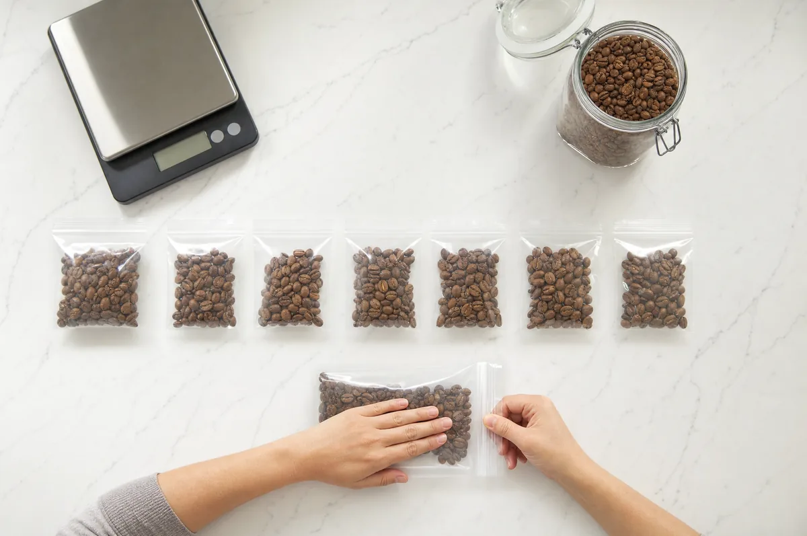

Inicio / Journal / ¿Cuánto dura el café? Grano, molido y ya hecho (y cómo conservarlo bien)
Guías y consejos
¿Cuánto dura el café? Grano, molido y ya hecho (y cómo conservarlo bien)
El café no caduca de un día para otro, pero se apaga. En grano y con la bolsa cerrada, suele estar en su mejor momento desde la primera o segunda semana tras el tueste hasta unas cuatro a seis semanas, y puede seguir siendo agradable bastante más tiempo. Molido pierde aroma en minutos, y conviene gastarlo en una o dos semanas. Ya preparado, se bebe bien durante la primera hora; en un termo cerrado aguanta unas horas. Los cuatro enemigos son el oxígeno, la humedad, el calor y la luz.

Lo primero: el café no «caduca», pierde aroma
Un café tostado es un producto seco, con muy poca agua. Por eso es difícil que se estropee en el sentido de «ponerse malo». Lo que le pasa es otra cosa: con el tiempo pierde aroma, dulzor y complejidad, hasta que la taza sabe plana o a cartón.
Por eso, para el café, la fecha que más importa no es la de consumo preferente, sino la de tueste.
- Fecha de tueste: cuándo se tostó. Te dice en qué punto de su vida está el café. No suele ser obligatoria, pero los tostadores que cuidan su producto la ponen.
- Fecha de consumo preferente: la exige el Reglamento (UE) 1169/2011 en los alimentos envasados. Indica hasta cuándo el fabricante garantiza que el producto, bien conservado, mantiene sus propiedades. En el café suele estar a uno o dos años vista. No te dice cuándo está mejor.
Qué le pasa al café después del tueste
Tras el tueste, el grano sigue soltando dióxido de carbono (CO₂). A eso se le llama desgasificación, y explica por qué el café no sabe mejor el día que sale del tostador.
- Los primeros días: el grano está lleno de CO₂. Las burbujas que salen al preparar el café repelen el agua y la extracción es irregular. En espresso, la crema puede verse espumosa e inestable.
- Después de unos días: el CO₂ baja, el café se asienta y los aromas se notan mejor. Es el llamado «reposo».
- Con las semanas: el oxígeno oxida poco a poco los aromas. El café pierde dulzor y complejidad.
Entre esos dos extremos está la ventana ideal. Casi todos los tostadores recomiendan dejar reposar el café entre unos 3 y 14 días antes de prepararlo, según el tueste y el método: el filtro admite café más joven que el espresso.
Café en grano: cuánto dura
Con la bolsa cerrada (con válvula de desgasificación), el café en grano mantiene bien su sabor durante varias semanas. Algunos tostadores cuentan que cafés bien guardados siguen estando buenos meses después del tueste: no hay una fecha de caducidad, hay una curva suave.
Una vez abierta, como orientación, cuenta con unas 2 a 4 semanas de buen sabor y alguna más de sabor aceptable. Cada vez que abres la bolsa entra aire nuevo.
Cómo alargarlo:
- Exprime el aire de la bolsa y ciérrala bien después de cada uso, o pásala a un bote opaco y hermético.
- Mantén la bolsa cerrada hasta que vayas a empezar a usarla.
- Saca solo lo que vayas a usar y cierra la bolsa enseguida.
- Aléjalo del calor: no lo guardes junto a la cocina, el horno, la cafetera o una ventana soleada.
Café molido: cuánto dura
El café molido es el que menos aguanta. Al moler, el café pasa de ser unos granos enteros a mucha superficie expuesta al aire, y la oxidación se acelera. Mientras los granos retienen su sabor durante varias semanas, el café molido empieza a perder aroma en cuestión de minutos.
Qué hacer:
- Si puedes, compra el café en grano y muélelo justo antes de prepararlo. Es el cambio que más mejora la taza.
- Si compras molido, cómpralo en bolsas pequeñas y gástalo en una o dos semanas.
- Ciérralo bien y guárdalo siempre en un lugar fresco y seco.
Café ya hecho: cuánto dura
Aquí hay que separar el sabor de la seguridad.
- En la taza: el mejor sabor está en la primera hora. Después se enfría, se oxida y se vuelve más amargo y plano.
- En un termo cerrado y precalentado: mantiene la temperatura y el café aguanta unas horas.
- En la nevera, tapado y sin leche: unos 3 o 4 días como orientación, con un sabor más flojo. Va bien para preparar café frío o con hielo.
- Con leche: tómalo en el momento. Si lo guardas, que sea en la nevera, bien tapado, y no más de uno o dos días: la leche es la parte perecedera.
Si huele raro o ves algo extraño, tíralo. Ante la duda, no lo bebas.

¿Nevera o congelador?
La nevera no es buena idea para el café del día a día. Cada vez que sacas el café, el frío y la humedad del ambiente pueden condensar agua en el grano, y el café absorbe con facilidad los olores de otros alimentos.
El congelador puede funcionar, con condiciones. La evidencia científica sobre congelar café es limitada. Lo que se sabe es que el frío frena el envejecimiento, pero no lo detiene. Y hay un efecto curioso sobre la molienda: un estudio publicado en Scientific Reports (2016) midió que el café más frío se muele en partículas más pequeñas y más uniformes. En la práctica, si lo mueles congelado, el café sale algo más fino: sube un punto el grosor del molino.
Congelar tiene sentido sobre todo si compras más café del que vas a gastar en unas semanas. La regla es sencilla: congela porciones pequeñas, bien selladas, y descongela solo lo que vayas a usar.

Cómo congelar café paso a paso:
- Congela café fresco. Lo que congeles conservará el estado en que lo metas: hazlo en las primeras semanas tras el tueste.
- Divide en porciones de una semana (por ejemplo, 100 a 125 g) en bolsas herméticas o botes pequeños.
- Saca todo el aire antes de cerrar.
- Doble barrera. Mete las porciones en otro recipiente cerrado para que no cojan olores.
- Guárdalo al fondo del congelador, no en la puerta, donde la temperatura varía más.
- Saca solo una porción y déjala llegar a temperatura ambiente sin abrirla, para que no se condense agua dentro. Si prefieres molerlo congelado, recuerda subir un punto el grosor.
- No lo vuelvas a congelar una vez sacado.
¿Cuánto tiempo aguanta? No hay un plazo científico cerrado. Como regla práctica, piensa en meses, no en años.
Cuánto dura una bolsa de 250 g
Una forma sencilla de no pasarte de la ventana de frescura es comprar la cantidad que vas a gastar en unas dos semanas. Esto es lo que dura una bolsa de 250 g según cuánto bebas:
| Cuánto bebes al día | Café de filtro (15 g por taza de 250 ml) | Espresso doble (18 g por café) |
|---|---|---|
| 1 café | Unos 16 días | Unos 14 días |
| 2 cafés | Unos 8 días | Unos 7 días |
| 3 cafés | Unos 5 días | Unos 5 días |
Con una bolsa de 250 g, el café se gasta casi siempre dentro de su mejor momento. Si bebes poco, compra bolsas pequeñas con más frecuencia, o congela porciones.
Cómo saber si tu café ya está pasado
- Huele poco o nada, o huele a cartón.
- Sabe plano: sin dulzor ni matices, solo amargor o vacío.
- El espresso sale sin crema, o con una crema que desaparece enseguida.
- Huele a rancio, como a aceite viejo. Esto es más fácil en tuestes oscuros, con granos aceitosos.
- Huele a humedad o ves moho. Entonces tíralo.
Un café pasado de fecha, pero seco y bien cerrado, no suele ser peligroso: sencillamente sabrá a poco. Si hay humedad, moho o mal olor, no lo uses.
Preguntas
Preguntas frecuentes
¿Otra duda? Escríbenos →01¿Cuánto dura el café en grano una vez abierto?
Como orientación, unas 2 a 4 semanas de buen sabor y alguna más de sabor aceptable, si lo guardas bien cerrado, en un lugar fresco y seco, y lejos de la luz.
02¿Cuánto dura el café molido?
Pierde aroma en minutos y conviene gastarlo en una o dos semanas tras abrir el paquete. Si puedes, compra en grano y muele justo antes de preparar el café.
03¿Se puede guardar el café en la nevera?
No es lo ideal. El frío y la humedad pueden condensar agua en el grano, y el café absorbe olores con facilidad. Si necesitas guardar mucho tiempo, es mejor el congelador, en porciones pequeñas y bien selladas.
04¿Se puede congelar el café? ¿Cuánto tiempo?
Sí, si se hace bien: café fresco, en porciones pequeñas, herméticas y sin aire, y sacando solo lo que vas a usar. No hay un plazo científico cerrado; piensa en meses, no en años. Una vez sacado, no lo vuelvas a congelar.
05¿Cuánto dura el café hecho?
Para el sabor, la primera hora. En un termo cerrado y precalentado aguanta unas horas. En la nevera, tapado y sin leche, unos 3 o 4 días como orientación (con leche, uno o dos).
06¿El café caducado hace daño?
Un café seco y bien cerrado pasado de fecha no suele ser peligroso, solo sabe plano. Si ha cogido humedad, tiene moho o huele a rancio, no lo uses.
07¿Dónde se guarda mejor el café?
En un bote opaco y hermético, o en su bolsa original bien cerrada, en un lugar fresco, seco y alejado de la luz y de fuentes de calor como la cocina o el horno.
08¿Qué es la fecha de tueste y por qué importa?
Es el día en que se tostó el café. Te dice en qué punto de su vida está: demasiado reciente (aún suelta gas), en su mejor momento o ya apagándose. Es más útil que la fecha de consumo preferente para saber cuándo preparar el café.
Fuentes
- Uman, E. et al. (2016). The effect of bean origin and temperature on grinding roasted coffee. Scientific Reports, 6, 24483: https://doi.org/10.1038/srep24483
- Reglamento (UE) n.º 1169/2011, información alimentaria facilitada al consumidor (fecha de duración mínima): https://eur-lex.europa.eu/eli/reg/2011/1169/oj
- Breville, «¿Por qué es importante la frescura del café?» (desgasificación, oxidación y molienda): https://www.breville.com/mx/es/coffee-journey/inspiration/beans/why-is-coffee-freshness-important.html
- Bean Poet, «Can You Freeze Coffee Beans?» (congelación, higroscopicidad y porciones): https://www.beanpoet.com/can-you-freeze-coffee-beans/
- Bean & Bean Coffee, «Why should you rest your coffee?» (rangos de reposo según el tueste): https://beannbeancoffee.com/blogs/beansider/why-should-you-rest-your-coffee
- Eight Ounce Coffee, «Does the Freshness of your Coffee Matter?» (reposo y conservación): https://eightouncecoffee.com/blogs/news/does-the-freshness-of-your-coffee-matter
Última actualización: 2 de noviembre de 2026. Los rangos de tiempo son orientativos y pueden variar según el café, el tueste y el envase.